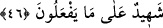

Kâfirlerin kabirde kalma sürelerini az bulmaları ise kabirde uğrayacakları azâbın âhiret
azâbına göre yarım olmasından kaynaklanmaktadır. Çünkü berzah/kabir âlemindeki ruh
ve bedenin orada nimetlenmesi ve elem çekmesi, haşrdan sonraki nimetlenme ve acı
çekmeden farklıdır. Bunu iyi kavra, Allah sana doğruyu göstersin.
Kâfirler, dünyada tanıdıkları gibi, orada da birbirlerini tanırlar. Sanki onlar ölüm
sebebiyle ancak çok az bir müddet ayrılmıştır ve bu az müddetin kabirden ilk
çıktıklarında bu tanımanın ortadan kalkmasında tesiri yoktur. Sonra azabı gördükleri
zaman bu tanışmaları sona erer ve birbirlerinden uzak olduklarını ifâde ederler.
et-Te’vîlâtü’n-Necmiyye’de şöyle denilir: Âyet, olup bozulma ve sona erme (kevn,
fesâd ve tenâhî) âlemi olan bu cisimler âleminin darlığından, bozulup sona ermeyen
ruhlar âleminin genişliğine çıkmaya işâret etmektedir. Çünkü bâki olan âhirete nisbetle
bu fânî dünyanın ömrü gündüzün bir ânı, hatta ânından bile az bir süresi gibi gözükür.
Sonra bilesin ki haşr; umûmî, husûsî ve daha husûsî olur. Umûmî haşr, bir araya
toplanma gününde bütün cesetlerin kabirlerinden mahşere doğru çıkışlarıdır. Husûsî
haşr ise seyr ve sülûk ile insanların uhrevî ruhlarının kabre benzeyen dünyevî
cisimlerinden daha yaşarken ruhânî âleme doğru gitmesidir. Çünkü onlar, canlı
sûretlerini ilgilendiren ölüm ile ölmeden evvel nefsânî sıfatlarından kendi irâdeleriyle
ölmüşlerdir. Daha husûsî haşr ise rûhâniyyet benliğinin kabirlerinden rabbâniyyet
hüviyyetine çıkmaktır. Nitekim Allah Teâlâ: “O gün takvâ sâhiplerini heyet hâlinde
Rahmân’ın huzûrunda toplarız.” (Meryem, 19/85) buyurmuştur.
“Allah’ın huzûruna çıkmayı yalanlayıp” yaptıkları ticârette “doğru yola gelmemiş
olanlar en büyük ziyâna uğramışlardır.” Hesap ve ceza konusunda aldanmışlardır.
Çünkü îmânı inkârla, tasdiki de tekzible değiştirmişler, vakit geçtiği halde hiçbir fayda
elde edememişlerdir.
Bu ifade Allah Teâlâ’nın yalanlayıcıların ziyâna uğradıklarına dâir bir şehâdeti ve
teaccübüdür.
Bir çocuğa hoca ne güzel söyledi
Hakk’a yarar bir iş işlemedik, günümüz gelip geçti.
46. Eğer onları tehdit ettiğimiz (azâbın) bir kısmını sana (dünyada iken)
gösterirsek (ne âlâ!); yok eğer (göstermeden) seni vefat ettirsek nihâyet onların
dönüşü de bizedir. Sonra Allah onların yapmakta olduklarına da şâhittir.
“Eğer onları tehdit ettiğimiz” azâbın “bir kısmını sana” Bedir’de gösterdiğimiz
gibi sen hayattayken hemen “gösterirsek,” ne âlâ! Yani “azâbı, senin için ortaya çıkarıp